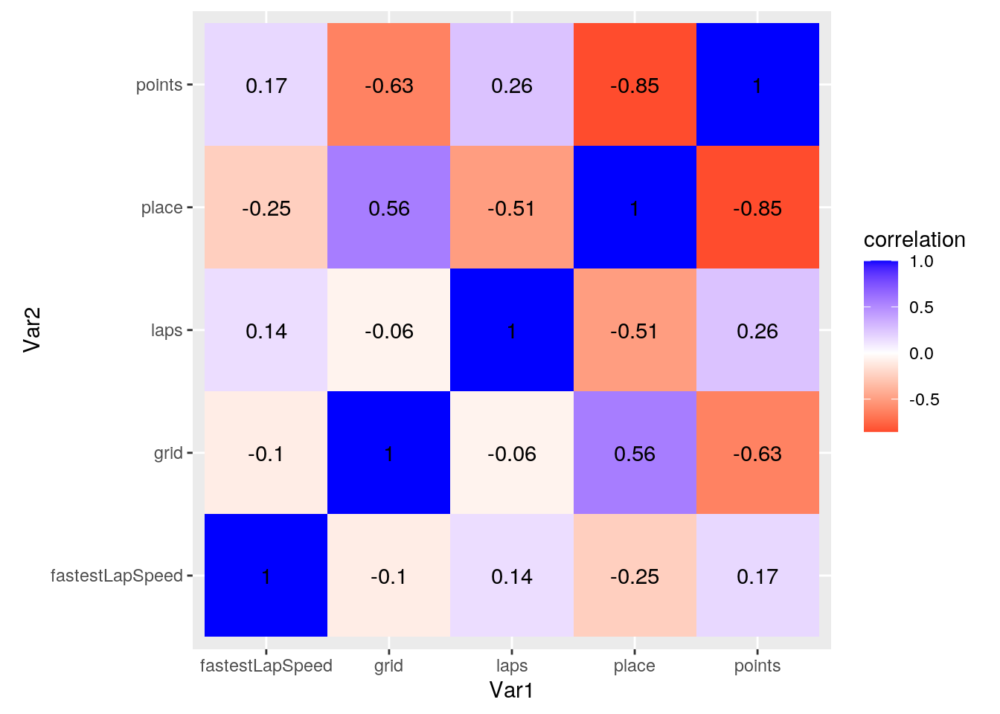
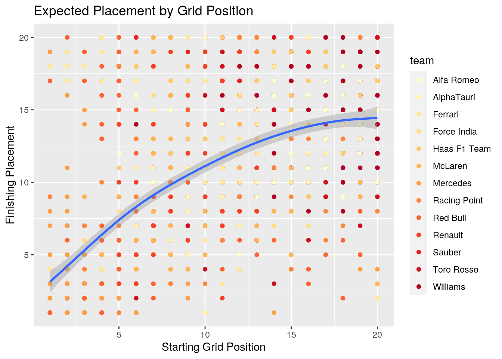
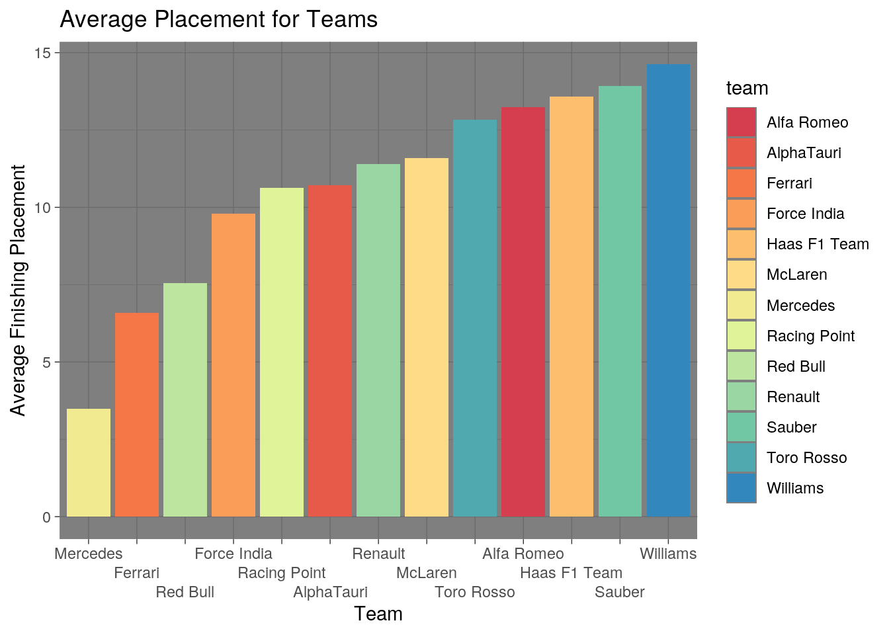
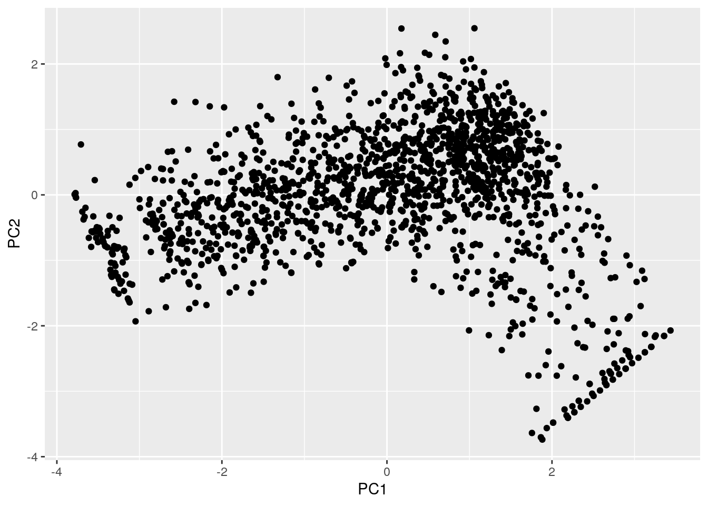

Brandon Deeb (btd543)
And away we go! Loading stuff up.
library(tidyverse)
library(dplyr)
getwd()## [1] "/stor/home/btd543/Website/content/project"races <- read.csv("races.csv")
qualifying <- read.csv("qualifying.csv")
results <- read.csv("results.csv")
lap_times <- read.csv("lap_times.csv")
driver_standings <- read.csv("driver_standings.csv")
constructor_standings <- read.csv("constructor_standings.csv")
constructor_results <- read.csv("constructor_results.csv")
drivers <- read.csv("drivers.csv")
constructors <- read.csv("constructors.csv")
status <- read.csv("status.csv")In this portion, I am cleaning up data; removing anything prior to 2017 because I only started following F1 after watching a documentary about the 2017 season. Depending on what results show, I might go back and use all of the data to get more interesting results about a team/nationality’s likelihood to win.
races <- races %>% filter(year > 2016)
qualifying <- qualifying %>% filter(raceId > 968)
results <- results %>% filter(raceId > 968)
lap_times <- lap_times %>% filter(raceId > 968)
driver_standings <- driver_standings %>% filter(raceId > 968)
constructor_standings <- constructor_standings %>% filter(raceId >
968)
constructor_results <- constructor_results %>% filter(raceId >
968)Further cleaning, removing undesirable columns, such as Wikipedia pages and other information I won’t need. This information has some really valuable information, all the way down to the times for qualifying races used to set grid order, but for some reason also has a lot of ‘noise’.
drivers <- drivers %>% select(driverId, driverRef, nationality)
constructors <- constructors %>% select(constructorId, name)
races <- races %>% select(raceId, name)Inital merging of datasets; getting all useful information into one clean table. This join adds the names of drivers to the dataset based on their Driver Id, so at a glance you can know who is who.
lol <- left_join(results, drivers, by = "driverId")This join adds the status of each racer to the results. This was also originally just given as a number, but it’s much easier to see that someone blew a tire than to track down what a ‘Status 4’ means in a race.
lol <- left_join(lol, status, by = "statusId")Similar to the Driver Id join, but this is for constructors, or the people who engineer the cars. Very important information to have for this dataset (SPOILER: after watching for a couple episodes, it was very apparent to see how money is such a big factor. Big companies like this literally shell out millions of dollars every year just to…have a slightly bigger advantage in car design? It’s kind of biased and skews results, as other drivers literally never stand a chance, but interseting nonetheless).
lol <- left_join(lol, constructors, by = "constructorId")
lol <- lol %>% select(-driverId, -constructorId, -number, -position,
-positionText, -fastestLap, -statusId)Adding the locations/names of each Grand Prix instead of a numerical value. This will be useful in determining outliers in certain factors, seen later in the project.
lol <- left_join(lol, races, by = "raceId")
lol <- lol %>% select(-rank)
lol <- lol %>% rename(team = name.x)
lol <- lol %>% rename(`grand prix` = name.y)
lol <- lol %>% rename(place = positionOrder)Untidying and Retidying. For some reason, this portion did not work. I balanced the parentheses like you suggested, but it still refused to re-tidy.
# lol %>% pivot_wider(names_from='team',
# values_from='points') -> untidy untidy %>%
# pivot_longer(cols=c('Ferrari', 'Mercedes', 'Red Bull',
# 'Williams', 'Force India', 'Toro Rosso', 'Renault',
# 'Sauber', 'McLaren', 'Haas F1 Team', 'Alfa Romeo', 'Racing
# Point', 'AlphaTauri'),names_to='team', values_to='points')Exploring the dataset using dplyr functions!
This analysis is aimed at seeing who crashes the most! Initial analysis takes all those that crash and puts them in a separate table. Further analysis looks to compare how many of these people who crash tend to place (surprise, those who finish first, tend not to crash).
crash <- lol %>% filter(status == "Accident")
crash %>% group_by(driverRef) %>% summarize(count = n()) %>%
arrange(-count)## # A tibble: 16 x 2
## driverRef count
## <fct> <int>
## 1 ericsson 4
## 2 hulkenberg 4
## 3 giovinazzi 3
## 4 leclerc 3
## 5 max_verstappen 3
## 6 kvyat 2
## 7 sainz 2
## 8 vandoorne 2
## 9 vettel 2
## 10 alonso 1
## 11 bottas 1
## 12 grosjean 1
## 13 kevin_magnussen 1
## 14 ocon 1
## 15 raikkonen 1
## 16 russell 1performance <- lol %>% group_by(driverRef) %>% summarize(mean(place))
performance %>% arrange(performance$`mean(place)`)## # A tibble: 34 x 2
## driverRef `mean(place)`
## <fct> <dbl>
## 1 hamilton 2.42
## 2 bottas 4.48
## 3 vettel 6.27
## 4 max_verstappen 6.84
## 5 albon 8.87
## 6 raikkonen 9.22
## 7 leclerc 9.24
## 8 ricciardo 9.30
## 9 perez 9.42
## 10 norris 9.97
## # … with 24 more rowsLooking at the fastest lap speed for drivers in each Grand Prix. For some reason, this wasn’t numerical, so I made it numerical. I used the average fastest lap speed to break the dataset into the ‘Really Fast’ and the ‘Kinda Fast’ (a fun little jest; can’t imagine a world where 209mph is only relatively fast! LOL I couldn’t even imagine driving that fast on the highway!). Not that surprisingly, the fastest lap speeds consistently stay with Ferrari and Mercedes, two teams that spend astronomically more than the other competitors.
fast <- lol %>% arrange(desc(fastestLapSpeed))
fast <- fast %>% filter(fastestLapSpeed != "\\N")
fast %>% head()## resultId raceId grid place points laps time milliseconds
## 1 24468 1023 2 3 16 53 +35.199 4561864
## 2 24043 1002 3 1 25 53 1:16:54.484 4614484
## 3 24046 1002 2 4 12 53 +16.151 4630635
## 4 24772 1038 1 7 7 53 +17.245 6443301
## 5 24478 1023 4 13 0 52 \\N \\N
## 6 24467 1023 3 2 18 53 +0.835 4527500
## fastestLapTime fastestLapSpeed driverRef nationality status team
## 1 1:21.779 255.014 hamilton British Finished Mercedes
## 2 1:22.497 252.794 hamilton British Finished Mercedes
## 3 1:22.505 252.770 vettel German Finished Ferrari
## 4 1:22.746 252.033 hamilton British Finished Mercedes
## 5 1:22.799 251.872 vettel German +1 Lap Ferrari
## 6 1:22.859 251.690 bottas Finnish Finished Mercedes
## grand prix
## 1 Italian Grand Prix
## 2 Italian Grand Prix
## 3 Italian Grand Prix
## 4 Italian Grand Prix
## 5 Italian Grand Prix
## 6 Italian Grand Prixfast$fastestLapSpeed <- as.numeric(as.character(fast$fastestLapSpeed))
fast %>% summarize(mean(fastestLapSpeed, na.rm = T))## mean(fastestLapSpeed, na.rm = T)
## 1 209.1123fast <- fast %>% mutate(HowFast = case_when(fastestLapSpeed >=
209 ~ "Really Fast", fastestLapSpeed <= 209 ~ "Kinda Fast"))
fast %>% glimpse()## Rows: 1,519
## Columns: 16
## $ resultId <int> 24468, 24043, 24046, 24772, 24478, 24467, 24045, 2446…
## $ raceId <int> 1023, 1002, 1002, 1038, 1023, 1023, 1002, 1023, 1023,…
## $ grid <int> 2, 3, 2, 1, 4, 3, 4, 1, 19, 16, 8, 5, 1, 1, 7, 5, 6, …
## $ place <int> 3, 1, 4, 7, 13, 2, 3, 1, 8, 4, 6, 4, 1, 2, 8, 5, 5, 2…
## $ points <dbl> 16, 25, 12, 7, 0, 18, 15, 25, 4, 12, 8, 12, 25, 18, 4…
## $ laps <int> 53, 53, 53, 53, 52, 53, 53, 53, 53, 53, 53, 53, 53, 5…
## $ time <fct> +35.199, 1:16:54.484, +16.151, +17.245, \N, +0.835, +…
## $ milliseconds <fct> 4561864, 4614484, 4630635, 6443301, \N, 4527500, 4628…
## $ fastestLapTime <fct> 1:21.779, 1:22.497, 1:22.505, 1:22.746, 1:22.799, 1:2…
## $ fastestLapSpeed <dbl> 255.014, 252.794, 252.770, 252.033, 251.872, 251.690,…
## $ driverRef <fct> hamilton, hamilton, vettel, hamilton, vettel, bottas,…
## $ nationality <fct> British, British, German, British, German, Finnish, F…
## $ status <fct> Finished, Finished, Finished, Finished, +1 Lap, Finis…
## $ team <fct> Mercedes, Mercedes, Ferrari, Mercedes, Ferrari, Merce…
## $ `grand prix` <fct> Italian Grand Prix, Italian Grand Prix, Italian Grand…
## $ HowFast <chr> "Really Fast", "Really Fast", "Really Fast", "Really …Using this same analysis to see if maybe there’s a correlation between slow speeds and Grand Prix. Turns out, when there are slow speeds, there tend to be a lot of them! I was wondering why that could be, and a quick Google search answered all of my questions: the races that have lots of slow speeds tend to have tracks that have lots of curves, so there aren’t as many chances to get a fast break and show off speed. I further examined the amount of times a driver shows up in this ‘slow’ category to confirm that it is the track; for the most part, those that race consistently have a similar appearance at this ‘slow’ speed (some of the higher ranking individuals do show up less, but not by much).
fast %>% summarize(quantile(fastestLapSpeed))## quantile(fastestLapSpeed)
## 1 136.5030
## 2 197.5375
## 3 208.2140
## 4 224.2080
## 5 255.0140slow <- fast %>% filter(fastestLapSpeed < 198)
slow %>% glimpse()## Rows: 390
## Columns: 16
## $ resultId <int> 23475, 24583, 23713, 24607, 24578, 24947, 24428, 2413…
## $ raceId <int> 973, 1028, 985, 1030, 1028, 1047, 1021, 1006, 1030, 9…
## $ grid <int> 3, 12, 20, 2, 14, 2, 5, 4, 7, 7, 5, 17, 6, 5, 15, 9, …
## $ place <int> 17, 18, 12, 2, 13, 2, 3, 16, 11, 7, 4, 15, 6, 4, 20, …
## $ points <dbl> 0, 0, 0, 18, 0, 18, 15, 0, 0, 6, 12, 0, 8, 12, 0, 0, …
## $ laps <int> 38, 52, 55, 55, 55, 55, 70, 8, 54, 56, 55, 64, 56, 55…
## $ time <fct> \N, \N, \N, +16.772, \N, +15.976, +1:01.433, \N, \N, …
## $ milliseconds <fct> \N, \N, \N, 5662487, \N, 5804621, 5765229, \N, \N, 57…
## $ fastestLapTime <fct> 1:24.696, 1:40.347, 1:40.349, 1:41.119, 1:40.380, 1:4…
## $ fastestLapSpeed <dbl> 197.860, 197.781, 197.777, 197.731, 197.716, 197.707,…
## $ driverRef <fct> bottas, kevin_magnussen, vandoorne, max_verstappen, s…
## $ nationality <fct> Finnish, Danish, Belgian, Dutch, Canadian, Finnish, G…
## $ status <fct> Power Unit, Brakes, +1 Lap, Finished, +1 Lap, Finishe…
## $ team <fct> Mercedes, Haas F1 Team, McLaren, Red Bull, Racing Poi…
## $ `grand prix` <fct> Spanish Grand Prix, United States Grand Prix, United …
## $ HowFast <chr> "Kinda Fast", "Kinda Fast", "Kinda Fast", "Kinda Fast…slow %>% group_by(`grand prix`) %>% summarize(count = n()) %>%
arrange(-count)## # A tibble: 16 x 2
## `grand prix` count
## <fct> <int>
## 1 Abu Dhabi Grand Prix 69
## 2 Hungarian Grand Prix 68
## 3 Mexican Grand Prix 60
## 4 Monaco Grand Prix 60
## 5 Singapore Grand Prix 56
## 6 United States Grand Prix 23
## 7 Turkish Grand Prix 19
## 8 Spanish Grand Prix 14
## 9 Chinese Grand Prix 7
## 10 Tuscan Grand Prix 5
## 11 German Grand Prix 4
## 12 Azerbaijan Grand Prix 1
## 13 Bahrain Grand Prix 1
## 14 Eifel Grand Prix 1
## 15 Japanese Grand Prix 1
## 16 Styrian Grand Prix 1k <- slow %>% ungroup() %>% group_by(driverRef) %>% summarize(count = n()) %>%
arrange(-count)Statistics time!
Removing pesky NAs from data before finding the mean, sd, and percentiles for each numeric of interest. Grouping by various catergories to see who overall has a better performance (again, big surprise, but the champions tend to do much better in every aspect). Definitely my favorite analysis, nationality of driver! The Dutch and Finnish really seem to have a sort of knack for F1, as they outperform other nationalities by a pretty fair amount!
lol %>% glimpse()## Rows: 1,580
## Columns: 15
## $ resultId <int> 23379, 23380, 23381, 23382, 23383, 23384, 23385, 2338…
## $ raceId <int> 969, 969, 969, 969, 969, 969, 969, 969, 969, 969, 969…
## $ grid <int> 2, 1, 3, 4, 5, 7, 10, 8, 9, 13, 11, 16, 18, 12, 17, 2…
## $ place <int> 1, 2, 3, 4, 5, 6, 7, 8, 9, 10, 11, 12, 13, 14, 15, 16…
## $ points <dbl> 25, 18, 15, 12, 10, 8, 6, 4, 2, 1, 0, 0, 0, 0, 0, 0, …
## $ laps <int> 57, 57, 57, 57, 57, 57, 56, 56, 56, 56, 56, 55, 55, 5…
## $ time <fct> 1:24:11.672, +9.975, +11.250, +22.393, +28.827, +1:23…
## $ milliseconds <fct> 5051672, 5061647, 5062922, 5074065, 5080499, 5135058,…
## $ fastestLapTime <fct> 1:26.638, 1:27.033, 1:26.593, 1:26.538, 1:26.964, 1:2…
## $ fastestLapSpeed <fct> 220.351, 219.351, 220.465, 220.605, 219.525, 216.830,…
## $ driverRef <fct> vettel, hamilton, bottas, raikkonen, max_verstappen, …
## $ nationality <fct> German, British, Finnish, Finnish, Dutch, Brazilian, …
## $ status <fct> Finished, Finished, Finished, Finished, Finished, Fin…
## $ team <fct> Ferrari, Mercedes, Mercedes, Ferrari, Red Bull, Willi…
## $ `grand prix` <fct> Australian Grand Prix, Australian Grand Prix, Austral…stats <- lol %>% filter(fastestLapSpeed != "\\N")
stats$fastestLapSpeed <- as.numeric(stats$fastestLapSpeed)
stats %>% na.omit()## resultId raceId grid place points laps time milliseconds
## 1 23379 969 2 1 25 57 1:24:11.672 5051672
## 2 23380 969 1 2 18 57 +9.975 5061647
## 3 23381 969 3 3 15 57 +11.250 5062922
## 4 23382 969 4 4 12 57 +22.393 5074065
## 5 23383 969 5 5 10 57 +28.827 5080499
## 6 23384 969 7 6 8 57 +1:23.386 5135058
## fastestLapTime fastestLapSpeed driverRef nationality status team
## 1 1:26.638 5053 vettel German Finished Ferrari
## 2 1:27.033 4966 hamilton British Finished Mercedes
## 3 1:26.593 5059 bottas Finnish Finished Mercedes
## 4 1:26.538 5070 raikkonen Finnish Finished Ferrari
## 5 1:26.964 4982 max_verstappen Dutch Finished Red Bull
## 6 1:28.045 4758 massa Brazilian Finished Williams
## grand prix
## 1 Australian Grand Prix
## 2 Australian Grand Prix
## 3 Australian Grand Prix
## 4 Australian Grand Prix
## 5 Australian Grand Prix
## 6 Australian Grand Prix
## [ reached 'max' / getOption("max.print") -- omitted 1513 rows ]stats %>% summarize_at(c("fastestLapSpeed", "laps", "points",
"grid", "place"), mean, na.rm = T)## fastestLapSpeed laps points grid place
## 1 3693.663 55.55958 5.276498 10.25806 10.13891stats %>% summarize_at(c("fastestLapSpeed", "laps", "points",
"grid", "place"), sd, na.rm = T)## fastestLapSpeed laps points grid place
## 1 1736.393 14.97482 7.281823 5.820936 5.586763stats %>% summarize_at(c("fastestLapSpeed", "laps", "points",
"grid", "place"), quantile, na.rm = T)## fastestLapSpeed laps points grid place
## 1 26.0 0.0 0 0 1
## 2 2309.0 52.0 0 5 5
## 3 3803.0 56.0 1 10 10
## 4 5361.5 66.5 10 15 15
## 5 6198.0 87.0 26 20 20stats %>% group_by(driverRef) %>% summarize_at(c("fastestLapSpeed",
"laps", "points", "grid", "place"), mean, na.rm = T) %>%
arrange(place)## # A tibble: 34 x 6
## driverRef fastestLapSpeed laps points grid place
## <fct> <dbl> <dbl> <dbl> <dbl> <dbl>
## 1 hamilton 4058. 59.8 19.6 2.67 2.42
## 2 bottas 4059. 58.2 13.9 3.43 4.48
## 3 max_verstappen 3943. 54.4 12.6 5.32 5.62
## 4 vettel 3930. 57.5 11.8 5.27 5.94
## 5 leclerc 3783. 54.2 7.16 8.25 8.70
## 6 raikkonen 3883. 57.4 6.62 8.49 8.79
## 7 albon 4051. 58.9 5.18 8.39 8.87
## 8 ricciardo 3807. 52.4 7.05 8.49 9.03
## 9 perez 3663. 58.1 4.46 10.2 9.28
## 10 ocon 3651. 56.1 3.74 10.0 9.42
## # … with 24 more rowsstats %>% group_by(team) %>% summarize_at(c("fastestLapSpeed",
"laps", "points", "grid", "place"), mean, na.rm = T) %>%
arrange(place)## # A tibble: 13 x 6
## team fastestLapSpeed laps points grid place
## <fct> <dbl> <dbl> <dbl> <dbl> <dbl>
## 1 Mercedes 4068. 59.2 16.7 3.04 3.49
## 2 Ferrari 3899. 56.1 11.4 5.14 6.08
## 3 Red Bull 3932. 54.3 10.2 6.41 6.83
## 4 Force India 3499. 58.2 3.87 10.0 9.21
## 5 Racing Point 3925. 57.7 3.93 11.3 10.1
## 6 AlphaTauri 4292. 56.1 3.24 11.1 10.4
## 7 Renault 3564. 53.5 2.95 10.4 11.1
## 8 McLaren 3570. 54.4 2.93 11.8 11.2
## 9 Toro Rosso 3360. 54.1 1.46 13.4 12.4
## 10 Alfa Romeo 3835. 57.1 0.855 14.1 13.2
## 11 Haas F1 Team 3559. 54.4 1.14 12.4 13.3
## 12 Sauber 3254. 53.6 0.679 15.2 13.6
## 13 Williams 3523. 55.8 0.591 15.4 14.5stats %>% group_by(nationality) %>% summarize_at(c("fastestLapSpeed",
"laps", "points", "grid", "place"), mean, na.rm = T) %>%
arrange(place)## # A tibble: 19 x 6
## nationality fastestLapSpeed laps points grid place
## <fct> <dbl> <dbl> <dbl> <dbl> <dbl>
## 1 Dutch 3943. 54.4 12.6 5.32 5.62
## 2 Finnish 3973. 57.8 10.3 5.91 6.59
## 3 British 3864. 57.3 9.87 8.25 8.20
## 4 Monegasque 3783. 54.2 7.16 8.25 8.70
## 5 Thai 4051. 58.9 5.18 8.39 8.87
## 6 Australian 3807. 52.4 7.05 8.49 9.03
## 7 German 3624. 55.3 6.93 8.45 9.05
## 8 Mexican 3663. 58.1 4.46 10.2 9.28
## 9 Brazilian 3472. 58.0 2.15 11.2 10.6
## 10 Spanish 3479. 53.7 3.41 10.9 10.7
## 11 French 3631. 55.4 2.54 11.2 11.3
## 12 Canadian 3720. 56.2 1.56 14.6 12.9
## 13 Russian 3663. 55.2 1.03 13.8 12.9
## 14 Belgian 3355 55.2 0.641 15.3 12.9
## 15 Danish 3545. 54.2 1.26 12.6 13.1
## 16 Italian 3738. 55.4 0.462 15.2 14.2
## 17 Swedish 3250. 51.8 0.220 16.0 14.2
## 18 New Zealander 3090. 51.2 0.174 16.1 14.7
## 19 Polish 3203. 56.1 0.0476 16.0 17Visualizations
This is the heatmap showing the correlations between all of the numeric variables in the dataset (Fastest Lap Speed, Laps, Place, Starting Grid Position, and Points). Unfortunately, a lot of these are directly related (i.e. drivers score points based on their placement, which tend to correspond to the amount of laps they drive). Because of this, there are pretty strong correlations, but it wouldn’t be measureing much to say “when drivers finish first, they get more points”. The interesting thing to note, and the one I really did want to test, was how starting grid position correlated with placement. They trend positively, which makes sense (lower starting grid position means more likely to finish lower (still weird to conceptualize low being good)). Grid position also trends negatively with Fastest Lap Speed. As previously mentioned, the teams at the top tend to be superior at engineering, meaning their cars have a better performance, which often translates to better results. Looking at the heat map, there is a negative correlation between Fastest Lap Speed and Place, as when a car tends to have a faster top speed, it tends to finish first, in a lower position.
lol %>% na.omit()## resultId raceId grid place points laps time milliseconds
## 1 23379 969 2 1 25 57 1:24:11.672 5051672
## 2 23380 969 1 2 18 57 +9.975 5061647
## 3 23381 969 3 3 15 57 +11.250 5062922
## 4 23382 969 4 4 12 57 +22.393 5074065
## 5 23383 969 5 5 10 57 +28.827 5080499
## 6 23384 969 7 6 8 57 +1:23.386 5135058
## fastestLapTime fastestLapSpeed driverRef nationality status team
## 1 1:26.638 220.351 vettel German Finished Ferrari
## 2 1:27.033 219.351 hamilton British Finished Mercedes
## 3 1:26.593 220.465 bottas Finnish Finished Mercedes
## 4 1:26.538 220.605 raikkonen Finnish Finished Ferrari
## 5 1:26.964 219.525 max_verstappen Dutch Finished Red Bull
## 6 1:28.045 216.830 massa Brazilian Finished Williams
## grand prix
## 1 Australian Grand Prix
## 2 Australian Grand Prix
## 3 Australian Grand Prix
## 4 Australian Grand Prix
## 5 Australian Grand Prix
## 6 Australian Grand Prix
## [ reached 'max' / getOption("max.print") -- omitted 1574 rows ]lol %>% summarize(cor(grid, place, use = "pair"))## cor(grid, place, use = "pair")
## 1 0.560938lol$fastestLapSpeed <- as.numeric(lol$fastestLapSpeed)
matrix <- lol %>% select(fastestLapSpeed, laps, points, grid,
place) %>% cor(use = "pair")
tidymatrix <- matrix %>% as.data.frame %>% rownames_to_column("var1") %>%
pivot_longer(-1, names_to = "var2", values_to = "correlation")
tidymatrix## # A tibble: 25 x 3
## var1 var2 correlation
## <chr> <chr> <dbl>
## 1 fastestLapSpeed fastestLapSpeed 1
## 2 fastestLapSpeed laps 0.142
## 3 fastestLapSpeed points 0.166
## 4 fastestLapSpeed grid -0.0962
## 5 fastestLapSpeed place -0.250
## 6 laps fastestLapSpeed 0.142
## 7 laps laps 1
## 8 laps points 0.260
## 9 laps grid -0.0638
## 10 laps place -0.506
## # … with 15 more rowstidymatrix %>% ggplot(aes(var1, var2, fill = correlation)) +
geom_tile() + scale_fill_gradient2(low = "red", mid = "white",
high = "blue") + geom_text(aes(label = round(correlation,
2))) + xlab("Var1") + ylab("Var2") + coord_fixed()
Comparing starting grid position to finishing placement. As per expectation, the general trend is that a better starting position results in a better finishing position (i.e. if you start ahead, their are less people to pass!). While comparably to each adjacent value, the difference is not astronomical, a drastic difference can be seen when the spread gets larger. Teams that tend to start in the back half of the pack have a significantly harder time battling back to place well. While the colors might be a bit difficult to track, it also worth noting that there is a large congregation of winning teams in the bottom left by winning placements. Very rarely (if at all) did a driver start in the very front of the grid and end up not placing well.
grid <- lol %>% filter(grid != 0)
library(RColorBrewer)
nb.cols <- 13
mycolors <- colorRampPalette(brewer.pal(8, "YlOrRd"))(nb.cols)
ggplot(grid, aes(x = grid, y = place)) + geom_point(aes(color = team)) +
geom_smooth() + ggtitle("Expected Placement by Grid Position") +
xlab("Starting Grid Position") + ylab("Finishing Placement") +
theme_grey() + scale_color_manual(values = mycolors)
The most important comparison in F1: what teams on average finish best? Really interestingly, even the top contenders really have a large deviation. While Ferrari and Red Bull give Mercedes a good challenge, their average placements are nearly double that of the champion. Also intriguing is how much scrapping goes on amongst the remaining teams! Outside of the top three placing teams, there seem to be an initial five teams that fight to be the ‘best of the rest’, with the last five teams showing a somewhat weak fight.
placements <- lol %>% group_by(team) %>% summarize(mean(place))
library(RColorBrewer)
nb.cols <- 13
mycolors <- colorRampPalette(brewer.pal(8, "Spectral"))(nb.cols)
placements %>% ggplot(aes(x = reorder(team, `mean(place)`), y = `mean(place)`,
fill = team, ), stat = "summary", fun = mean) + geom_col() +
labs(title = "Average Placement for Teams") + scale_x_discrete(guide = guide_axis(n.dodge = 3)) +
xlab("Team") + ylab("Average Finishing Placement") + theme_dark() +
scale_fill_manual(values = mycolors)
Clustering, here we GOOooo
In a sense, this measures how much ‘influence’ each variable has. The PC values we obtain will be a measure of how much variance can be predicted from a particular pair of variables. For instance, PC1 might be a measure of starting grid placement and finishing placement. PC1 is then a vector that the eigenvector (a measure of the influence of both of these variables) points to.
library(cluster)
cluster <- lol %>% filter(fastestLapSpeed != "\\N") %>% select(grid,
place, fastestLapSpeed, points, laps)
fit <- lol %>% select_if(is.numeric) %>% select(-resultId, -raceId) %>%
scale
rownames(fit) <- lol$driverRef
f1_pca <- princomp(na.omit(fit))
names(f1_pca)## [1] "sdev" "loadings" "center" "scale" "n.obs" "scores" "call"summary(f1_pca, loadings = T)## Importance of components:
## Comp.1 Comp.2 Comp.3 Comp.4 Comp.5
## Standard deviation 1.6132982 1.0151907 0.9394150 0.61560961 0.31940010
## Proportion of Variance 0.5208759 0.2062530 0.1766119 0.07584304 0.02041621
## Cumulative Proportion 0.5208759 0.7271289 0.9037408 0.97958379 1.00000000
##
## Loadings:
## Comp.1 Comp.2 Comp.3 Comp.4 Comp.5
## grid 0.451 0.483 0.183 0.728
## place 0.586 -0.115 -0.305 0.740
## points -0.561 -0.218 0.490 0.631
## laps -0.312 0.621 0.577 -0.365 0.227
## fastestLapSpeed -0.204 0.576 -0.788eigval <- f1_pca$sdev^2
varprop = round(eigval/sum(eigval), 2)#ggplot() + geom_bar(aes(y=varprop, x=1:7), stat=“identity”) + xlab("“) + geom_path(aes(y=varprop, x=1:7)) + geom_text(aes(x=1:7, y=varprop, label=round(varprop, 2)), vjust=1, col=”white", size=5) + scale_y_continuous(breaks=seq(0, .6, .2), labels = scales::percent) + scale_x_continuous(breaks=1:10)
round(cumsum(eigval)/sum(eigval), 2)## Comp.1 Comp.2 Comp.3 Comp.4 Comp.5
## 0.52 0.73 0.90 0.98 1.00eigval## Comp.1 Comp.2 Comp.3 Comp.4 Comp.5
## 2.6027312 1.0306121 0.8825005 0.3789752 0.1020164summary(f1_pca, loadings = T)## Importance of components:
## Comp.1 Comp.2 Comp.3 Comp.4 Comp.5
## Standard deviation 1.6132982 1.0151907 0.9394150 0.61560961 0.31940010
## Proportion of Variance 0.5208759 0.2062530 0.1766119 0.07584304 0.02041621
## Cumulative Proportion 0.5208759 0.7271289 0.9037408 0.97958379 1.00000000
##
## Loadings:
## Comp.1 Comp.2 Comp.3 Comp.4 Comp.5
## grid 0.451 0.483 0.183 0.728
## place 0.586 -0.115 -0.305 0.740
## points -0.561 -0.218 0.490 0.631
## laps -0.312 0.621 0.577 -0.365 0.227
## fastestLapSpeed -0.204 0.576 -0.788f1df <- data.frame(PC1 = f1_pca$scores[, 1], PC2 = f1_pca$scores[,
2])
ggplot(f1df, aes(PC1, PC2)) + geom_point()
This comparison shows the highest scoring on PC1 (which in racing, is actually the worst; high scores means finishing last). It then shows extremely low PC1 scorer, who are the top two drivers in F1 during this stint. Essentially, PC1 measures how well a driver performs in regards to the relationship between these two variables. Similar results are shown for PC2, which compare Fastest Lap Speed and laps completed, and which are negatively correlated. When filtering for highest scoring in PC1, we get drivers who typically do not perform well, as they start in high grid values and finish late. For the lowest scoring PC1 values, we get drivers who are champions, like Hamilton and Vettel. For PC2, we see the opposite trend.
f1_pca$scores[, 1:4] %>% as.data.frame %>% top_n(3, Comp.1)## Comp.1 Comp.2 Comp.3 Comp.4
## sainz.15 3.358491 -2.155062 -0.10822361 1.447216
## hulkenberg.32 3.436164 -2.071758 -0.07659239 1.572726
## grosjean.76 3.358491 -2.155062 -0.10822361 1.447216f1_pca$scores[, 1:4] %>% as.data.frame %>% top_n(-3, Comp.1)## Comp.1 Comp.2 Comp.3 Comp.4
## max_verstappen.49 -3.773536 0.027486211 -0.4394755 0.4656163
## bottas.59 -3.770997 -0.032517897 -0.4608626 0.2728056
## hamilton.63 -3.785049 0.007099761 -0.5150885 0.2688569f1_pca$scores[, 1:4] %>% as.data.frame %>% top_n(3, wt = Comp.2)## Comp.1 Comp.2 Comp.3 Comp.4
## norris.36 0.1755895 2.541487 0.6342941 0.1124272
## raikkonen.77 0.5853749 2.445441 0.5363243 -0.2914341
## pietro_fittipaldi 1.0601805 2.545477 0.5962689 -0.1947612f1_pca$scores[, 1:4] %>% as.data.frame %>% top_n(3, wt = desc(Comp.2))## Comp.1 Comp.2 Comp.3 Comp.4
## vettel.13 1.757141 -3.637595 -0.6377999 -0.7063287
## raikkonen.14 1.882704 -3.737827 -0.7092169 -0.9374728
## brendon_hartley.13 1.865376 -3.703312 -0.6771686 -0.9577895lol %>% filter(driverRef %in% c("hamilton", "vettel", "bottas"))## resultId raceId grid place points laps time milliseconds
## 1 23379 969 2 1 25 57 1:24:11.672 5051672
## 2 23380 969 1 2 18 57 +9.975 5061647
## 3 23381 969 3 3 15 57 +11.250 5062922
## 4 23399 970 1 1 25 56 1:37:36.158 5856158
## 5 23400 970 2 2 18 56 +6.250 5862408
## 6 23404 970 3 6 8 56 +48.808 5904966
## fastestLapTime fastestLapSpeed driverRef nationality status team
## 1 1:26.638 5053 vettel German Finished Ferrari
## 2 1:27.033 4966 hamilton British Finished Mercedes
## 3 1:26.593 5059 bottas Finnish Finished Mercedes
## 4 1:35.378 3406 hamilton British Finished Mercedes
## 5 1:35.423 3389 vettel German Finished Ferrari
## 6 1:35.849 3267 bottas Finnish Finished Mercedes
## grand prix
## 1 Australian Grand Prix
## 2 Australian Grand Prix
## 3 Australian Grand Prix
## 4 Chinese Grand Prix
## 5 Chinese Grand Prix
## 6 Chinese Grand Prix
## [ reached 'max' / getOption("max.print") -- omitted 230 rows ]lol %>% filter(driverRef %in% c("kevin_magnussen", "jolyon_palmer",
"brendon_hartley"))## resultId raceId grid place points laps time milliseconds fastestLapTime
## 1 23393 969 17 15 0 46 \\N \\N 1:27.568
## 2 23397 969 19 19 0 15 \\N \\N 1:32.195
## 3 23406 970 12 8 4 55 \\N \\N 1:37.528
## 4 23411 970 20 13 0 55 \\N \\N 1:38.181
## 5 23431 971 10 13 0 56 \\N \\N 1:35.552
## 6 23437 971 20 19 0 8 \\N \\N 1:38.718
## fastestLapSpeed driverRef nationality status team
## 1 4873 kevin_magnussen Danish Suspension Haas F1 Team
## 2 3634 jolyon_palmer British Brakes Renault
## 3 2761 kevin_magnussen Danish +1 Lap Haas F1 Team
## 4 2589 jolyon_palmer British +1 Lap Renault
## 5 3126 jolyon_palmer British +1 Lap Renault
## 6 2286 kevin_magnussen Danish Electrical Haas F1 Team
## grand prix
## 1 Australian Grand Prix
## 2 Australian Grand Prix
## 3 Chinese Grand Prix
## 4 Chinese Grand Prix
## 5 Bahrain Grand Prix
## 6 Bahrain Grand Prix
## [ reached 'max' / getOption("max.print") -- omitted 114 rows ]